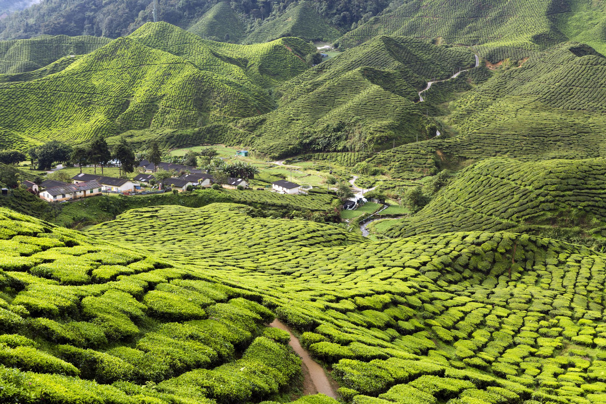

Látnivalók

Bangkok - Thaiföld
Bangkok vagy thai nyelven Krung Thep (magyarul: az angyalok városa) Thaiföld fővárosa, s egyben legnagyobb városa is. A város lakossága a 2010-es népszámlálás szerint 8 280 925 fő, míg a bangkoki agglomeráció 2016-ban mintegy 17 millió fő.[2] A város központja a Csaophraja folyó jobb partján fekszik, a Thai-öböl (Sziámi-öböl) mellett. Beceneve: „Kelet Velencéje”.
A Nagy Palota (thai: พระบรมมหาราชวัง, angol: Grand Palace) épületegyüttese Bangkok egyik leghíresebb látnivalója Thaiföldön.
A palota és a Wat Phra Keo egy közel 10 hektáros területen fekszik, a Csao Phraja folyónál. A területet övező magas fehér fal szöges ellentétben áll a benti épületcsoport színpompájával. Az ősi Sziám derűs, meseszerű világa fogadja itt a látogatót.
Az épületkomplexumot Bangkok első királya építette 1782-ben, majd minden uralkodó bővítette, így ma a különböző stílusok keveréke.
Phi Phi szigetek - Thaiföld
A Phi Phi szigetek (thaiul: หมู่เกาะพีพี, kiejtve: Pi Pi) szigetcsoport Thaiföldön, a nagy Phuket sziget és az ország kontinentális részének nyugati partja között, a Malaka-szorosban.
A szigetek közigazgatásilag Krabi tartományhoz tartoznak.
A csoport legnagyobb és legnépesebb szigete Ko Phiphidon. (Ko thaiul szigetet jelent.) A második legnagyobb sziget, Ko Phiphili strandjait is sokan látogatják. A többi sziget - köztük Bida Nok, Bida Noi és a Bambusz-sziget (Ko Majphaj) nem sokkal több, mint a tengerből kimeredő nagy mészkősziklák. A szigetek hosszúfarkú hajóval, vagy nagyobb hajóval elérhetők, Krabi városból, vagy Phuket tartomány kikötőiből.
Úszó piac - Thaiföld
Délkelet-Ázsiában található a világon egyedülálló úszó piac. Számuk sajnálatos módon folyamatosan csökkent, tekintve hogy korábban több száz volt, a látvány és a gazdag kínálat miatt mindenképpen érdemes meglátogatni.
A nyaralás kihagyhatatlan célpontja a halpiac, vagy a helyi bazár. Délkelet Ázsiában Thaiföld, Vietnám és Indonézia az úszó piacok paradicsoma. Ezekben a felsorolt országokban találkozhatunk piac címszó alatt a lapos csónakokkal, amelyet minden földi jóval megraknak. Mára már csak turistalátványosságnak számít, amelyek egykor a helyi kereskedelem fontos részei voltak.
A Damnoen Saduak a legnagyobb és leglátványosabb úszó „látványpiaca”. A 19.század közepén IV.Rama király parancsára épített csatorna –mely a vízi közlekedés megkönnyítésére épült – Bangkoktól 120 kilométerre található. A rogyásig megrakott csónakon találhatunk banánt, papayát, mangót, kókuszdiót, guavát, illetve helyi készételeket, édességeket. A csónaktúra alkalmával érdemes a program minden percét kiélvezni, és legalább egy félnapos elfoglaltságra számítani.
Angkor - Kambodzsa
Angkor, a khmer templomok ősi városa Kambodzsa szívében a 9. században létrejött Khmer Királyság fővárosa volt 802–1432 között. A birodalom legnagyobb kiterjedése idején magában foglalta Csenla államot, a mai Kambodzsa síkságait, valamint a mai Laosz és Thaiföld jelentős részét és a hajdani Kokinkínát, a Mekong deltáját. Az uralkodók hol megerősítették Angkor fővárosi státuszát, és tiszteletben tartották eredeti városszerkezetét, hol lerombolták, vagy a korábbiaktól elkülönülő, saját várost építettek hozzá. Így egészen különleges épületkomplexum jött létre a Mekong medencéjének „nagy tava”, a Szap-tó közelében, Phnompentől 242 kilométerre északnyugatra.
A 20. században 200 négyzetkilométeres területet tisztítottak meg az őserdőtől, s ezen több száz templom és szentély áll – közöttük a világ legnagyobb vallási célú épülete, Angkorvat. Csak a templomokat rakták kőből, az összes többi építményt – a királyi palotákat is – fából ácsolták, mára tehát ezek mind az enyészeté lettek, így Angkor ma egy hatalmas „templomváros” képében mutatkozik, noha természetesen nem csak vallási épületek voltak annak idején a városban.
Kuala Lumpur - Malajzia
Kuala Lumpur Malajzia fővárosa és egyben legnépesebb városa is. Itt található az ország kereskedelmi és gazdasági központja. A város egyike a három maláj szövetségi területnek.
Egyik legfőbb turisztikai látványossága a Petronas-ikertorony.

Cameron felföld - Malajzia
Malajzia egyik legkiterjedtebb hegyvidékére kanyargós út vezet. A 800 km hosszú maláj félszigetet egy ősi hegyvonulat szeli át, ennek része a Cameron-felföld. Malajzia zöldségtermelő központja, emellett híres teaültetvényeiről és virágairól. Az 1980-as évek óta egyre népszerűbb a turisták körében. Iskolaszünet idején a magas trópusi páratartalomból elvágyakozó malájok ellepik a Cameron-felföldet, ahol számtalan kikacsolódási lehetőség vár rájuk, mint a pillangópark, az eperfarm, kaktuszvölgy és a teaültetvények.
Tiltott város - Peking - Kína
A Tiltott Város (Peking) a Ming-dinasztiától a Csing-dinasztia végéig, csaknem ötszáz éven át szolgált a kínai császárok lakóhelyeként és Kína ceremoniális és hatalmi központjaként.
Az 1406 és 1420 között épült komplexum 980 épületből, bennük 8707 szobából áll,[1] és 720 000 négyzetméteren (ebből 150 000 m² beépített) terült el. Az épületegyüttes a hagyományos kínai palotaépítészet remekműve,[2] és sok évszázadon át befolyásolta a kulturális és építészeti irányzatokat Kelet-Ázsiában és máshol is. 1987-ben lett a világörökség része,[2] az UNESCO a világ legnagyobb régi faépület-együtteseként tartja nyilván.
1925 óta a Tiltott Város a Palotamúzeum szervezeti keretébe tartozik. A múzeum hatalmas anyaga a Ming- és a Csing-dinasztiák császári gyűjteményein alapul, de a kollekció egy része a kínai polgárháború nyomán a tajpeji Nemzeti Palotamúzeumban található.
Nagy Fal - Kína
A kínai nagy fal (hagyományos írásjegyekkel: 長城; egyszerűsített írásjegyekkel: 长城; pinjin: Chángchéng, népszerű magyar átírás: Csang cseng) az i. e. 3. század és i. sz. 17. század eleje között Kína északi határán épített erődítményrendszerek összessége, amelynek célja az volt, hogy a földművelő Kínát megvédje az északi nomád törzsek (részben a hunok) támadásaitól.
A nagy fal valójában nem volt összefüggő fal, különböző erődítményekből állt, amelyeknek jellege és elhelyezkedése a mindenkori politikai helyzettől függően változott. Az első védelmi rendszert Csin Si Huang-ti kezdte kiépíteni az i. e. 210-es években a Hadakozó fejedelemségek korának korábbi falszakaszait felhasználva. A későbbi dinasztiák némelyike új erődítményeket húzott fel (Han, Szuj, Ming), míg más korszakokban a falat egyáltalán nem használták. A ma látható falszakaszok az 1368 és 1644 között uralkodott Ming-dinasztia idején épültek; ezeket már téglából emelték, de a korábbi erődítmények fő építőanyaga a döngölt föld volt.